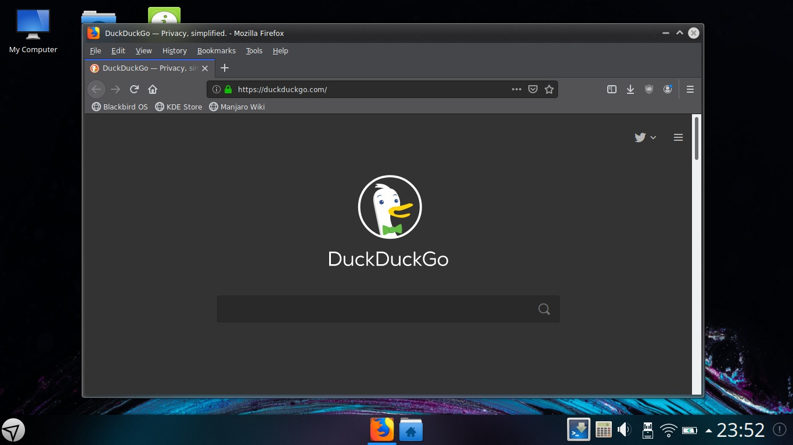

Welcome to Blackbird OS quick presentation
To navigate use
Blackbird is a rolling release based on Manjaro,
tailored with our own ideas how
a perfect OS should look like.
Blackbird desktop
Blackbird desktop
Menu
Menu: Games
Menu: Graphics
Menu: Internet
Menu: Multimedia
Menu: Office
Menu: Settings
Menu: System
Menu: Utilities
Menu: Web
Panel options
Panel provides a quick information about what's going on. For quick access, Firefox browser and Dolphin file manager are pinned to panel.
Firefox
Dolphin
Panel options: Status and notifications
Panel options: Date and time
Panel options: Notifications
Panel options: Dock and Panel Settings
My computer
Detailed information about computer.
My computer
System settings
Tweak your Blackbird with new settings.
Settings
Plasma Tweaks

Plasma Tweaks: Desktop Theme
Plasma Tweaks: Widget Style
Plasma Tweaks: Window Decorations
Plasma Tweaks: GNOME Application Style
Blackbird uses Calamares installer framework.
Ready to install?
Check out Blackbird OS website
and join conversation on our forums.